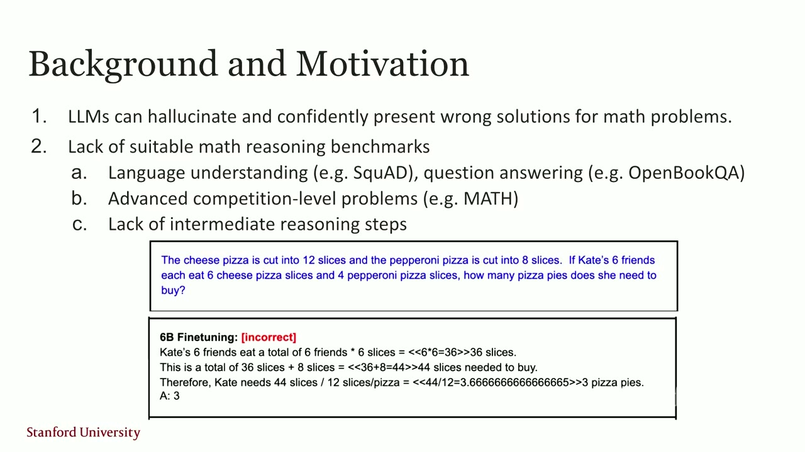
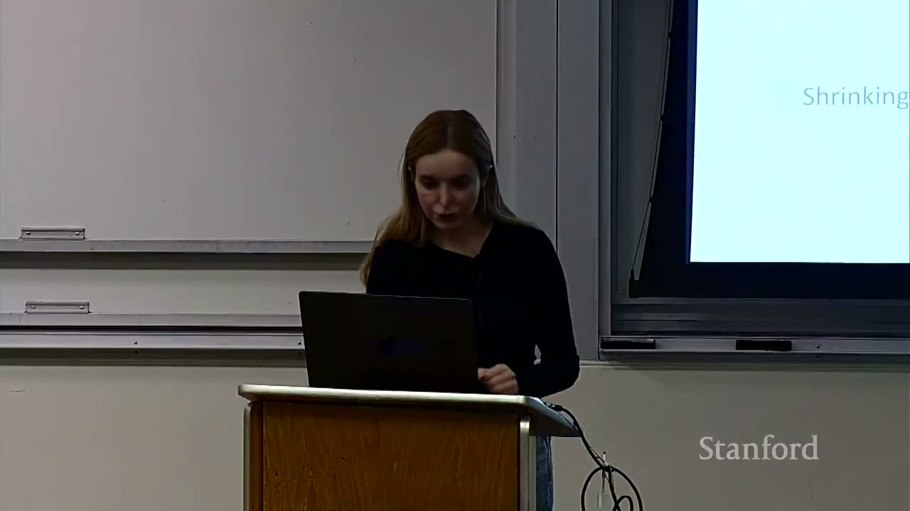
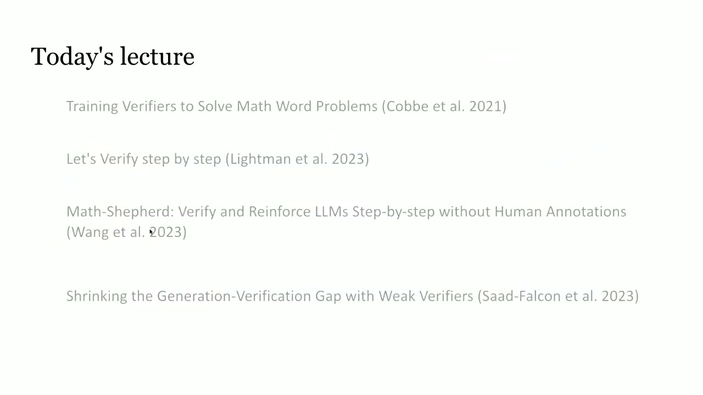

Part 3 — Robust Verification
📝 0 annotationsWelcome: the verification story
So lecture three is about verification.
In the last lecture when we talked about inference time scaling and the generation verification gap, basically what we discussed was that language model seems to be able to seems to know the answer to many of the hard questions, and especially with methods such as repeated sampling, or other scaling test time techniques, they can generate one. But a question is, how do they. How can we automatically select which answer is correct or guide the model throughout the process of answer generation. So that leads us to verification where which we are learning about today.
So in today's lecture, we are going to learn about the following four papers.
And there is a progression of how the way we approach verification changed or progressed throughout the years. So let's first start with training verifiers to solve math problems. This is a paper from OpenAI in 2021.
Paper 1: training verifiers that judge solutions

And the motivation for this fork was that LLMs hallucinate and can confidently present wrong solutions to the users. This still is true to this day. Four years later, of course, the model have become significantly better. There is also at the time, one of the contributions of this paper was to introduce a new reasoning benchmark around math. And you can see here in blue one of these problems.
This is the type of problem that at the time it was hard for LLMs to solve. And this led to this new dataset. And that has become kind of a big part of many of the benchmarking tasks for LLMs. And even to this day, this dataset is called GSM 8-K. And even to this date, for smaller models and benchmarking, it's still a very useful language modeling evaluation.
And you can consider it for the type of evals that you want to define on your projects as well. So it basically consists of 8,500 grade school math problems. And the goal was for this was to have the quality and diversity of the problems. But also importantly there was a focus on multi-step reasoning, meaning that to solve the problems, even though the problems were simple. But the model required a few steps of reasoning to get to the answer. And you could also collect the solution in natural language as opposed to pure math.
But the other contribution of this paper, which we are going to spend more time on, was to train a verification model where the verifier outputs the probability that a solution is correct. So let's see about how this can be useful. For example, the model that as humans we solve problems.
It would be very, very good for us to have access to a rubric or a way for us to tell whether we are correct or not. And we kind of want to provide the same thing through this verifier for the language model.
So now how these the verifier was trained in this case is that assume that we have a question and a solution for it.
Then we do have a label whether is a binary label, whether it's correct or incorrect. And during the training process, the generator, the language model, which is in charge of answering questions here produces PSI, which is the solution to question QI, and then we can generate-do repeated sampling and generate multiple, in this case, 100 solutions per problem. And then we create these labels based on whether they were correct or not. Remember that these questions and answers were selectively designed by a lot of manual human supervision. So we know what the answers-- the final answers to these problems are.
So we can just, based on that, create these labels for these problems. And then given that we can train a verifier, because now, we have a question, we have a solution, and then we have a label for it.
Now, the way we use it at test time is that at test time, again, we generate a lot of answers. And then we use the verifier and look at the score, basically, the log probability that is in this model now, to see which one has a higher score and use that for as our-and show that as our final answer.
So in this paper, the verifier was trained not just based on the correctness prediction, but there was also a language modeling objective. So the language modeling objective is also given, for example here, given these tokens corresponding to the questions, the moment we get to the solution token, we also add a loss that kind of urges-- like, motivates the model to predict or reduce the solution distance from the true labels for that solution.
So in this paper, they said that it helped them to have two losses. One is the binary loss and the other one was the normal language modeling, next prediction token loss. And the verifier itself, the architecture of the verifier is also a language model. But also, this language model has a small scalar head that outputs the binary prediction on a per-token basis.
So basically, on a per token we are saying how close was the solution to the true labels generated by humans.
And then the tokens in questions are masked out because we are not optimizing for that. So we generate the question. We pass in, fill in the model with the questions, and we ask it to generate the solutions. And we work with these two losses.
The way they trained the model was to fine tune the generator language model for two epochs, and then sample 100 completions per question, label it whether they were correct or not, and then train a verifier for a single epoch on this dataset.
So first, they did fine tune the language model on that dataset on a portion of that dataset. And this step maybe it's like debatable whether we still need this step or not. Because language models are already very good at instruction following and understanding math. So maybe and for a lot of newer verifiers, we directly go to the training the verifier objective without any supervised fine tuning first.
So they did a number of ablation studies. One was to create this label of correct or incorrect at the sentence level. So we have a loss that only concerns at each sentence level.
For example, after each period looks into the previous sentence and looks whether this is a correct step given of the correct step for the solution or not, or they could do at a token level. So this is very, very noisy kind of label. Like basically we want every token to follow.
The pattern that leads to a final correct solution at the end of this generation. And then the way this is used at test time is the final solution score is the score after the last token.
Because if you have a token label prediction per token, at the end of the day, we want only one prediction for the entire generation, whether it's correct or not. And it turns out, in this case, they looked it after the last token. All right. So we were talking about if you have a token, a label per token, at the end of the day, we want one token, yes or no, whether this answer was correct or not. And this is done in this case by just looking at the very last token. And if that was a correct, then the entire answer is assumed correct, and otherwise, it's assumed incorrect.
So we predict for S1, S2, SM, we predict these labels.
And then we only look at the very last label to generate and allocate a label for the entire solution.
So here is-- looking back at these problems, when we get to the solution, we are looking at the token-level prediction by the train verifier. And if it's green, meaning the verifier has a high score and the red ones means a lower score in this case. And in this case, there were some lower scores in the middle, but towards the end, it became greener and greener, and this was a correct prediction at the end. At the end, the very last stage is a green one and we assume the actual score and the verifier predictions are in this case are matching. In this other case, the last verifier is red.
It starts off well, but it has a. There is something a mistake is made, which is towards the end of this generation step and the actual score is negative and the verifier prediction is also negative. So this is how basically this verifier is trained for GSM-8K And then they did some ablations or comparisons with a baseline where we just directly just fine tune on this dataset fine tune meaning with supervised fine tuning. So we just take the base model and the next token prediction, or we do this verification stage where we generate 100 samples at each generation, and use the highest score of the verifier as the true as the delivered output by our system.
So the idea, what we can see here is that for both 6B and 175b models, this one is a GPT-3 model, I believe.
For both of these, verification seems to work better, especially as the training set size for the verifier increases.
So the verifier model eventually outperform the fine-tuning-only approach.
And vice versa, if you have smaller data sets-in this case, less than 1,000 for the 175B-the verification is not helping much.
[INAUDIBLE] Sorry, can you speak up?
I mean, the test summary of the 6B verification is still much higher than the [INAUDIBLE] on the smaller [INAUDIBLE].
The orange lines still-- Isn't it lower-- OK, I see. --than 175B? [OVERLAPPING SPEECH] OK, let me go here. So this is another result which is very interesting.
And this is something that could potentially be a research project that you guys can look into.
So what they did is that they tested two approaches, one having a larger generator and smaller verifier, and two having a smaller generator and larger verifier. And what they saw was that the larger generator helps.
The smaller verifier does better than vice versa. And to some extent, this is intuitive, because if we assume generation is naturally, or on average, is a harder task than verification, then this might make sense. But finding the Pareto optimal of how these two can be the sizes, with respect to each other, would be a very interesting research question, especially right now, as the base-model generators have improved a lot.
And also, we have access to a lot of verifiers. On Hugging Face, there's a leaderboard of verification, verifier models, or reward models that can be tested against. So again, this was the main message from this ablation study.
Another result about test-time scaling that they're showing is that, as they increase the number of completions per problem, and then they use the verifier, it seems like around 400 or so.
That's where they get a lot of benefit. But after that, they're not getting a lot of benefit. So if they sample 800 solutions and they use the verifier against that, the verifier fails to track what's best and what's not, compared to the true distribution of the solutions.
So one question for you is that, do you remember last time, when we talked about majority voting? What was the range that we were getting out of that? We showed that majority voting, although, is useful to some extent as we increase the number of samples per query, it fails, after some point, to track. And that's the generation-verification gap. Does any does anyone remember that?
OK, so that was-- we saw that the failure happens after 10 to-we never got to 50 samples. Even though the coverage goes up, the pass at one-or basically, how we can generate, select the correct response-fails around 50 or less for the majority voting approach.
But here, they're showing that, up until 400, they can increase the accuracy, and the verifier is still useful.
Yes, but when they have-- so they do have the true labels per problem. And then, when they are testing this verifier, the verifier ranks these at each point. Say, for 400, these 400 solutions, they take the highest score, and they compare that against ground truth, and that's what they're reporting here-- whether that was correct or not. My question is that, in the training time, you said there's [? over ?] 100 [? fusion. ?] At test time-- and training time as well, for the verifier, but not for the generator. OK. For the training times, all are human [INAUDIBLE] but the training-- So, for each problem, the human has once generated an answer.
That's offline. That's done once. Then you take the model, generate 100 solutions per problem, and you compare each of the solutions against the ground truth, which is generated only once by humans. And you see whether they match or not. That's how you create the label. OK. OK, any questions from this paper? Yes? I have a question. After 400, it made sense. The verifier is increasing results. But after that, why does it drop? Intuitively, why doesn't it stay constant?
OK, so the question is, why does it drop after 400?
It shouldn't be constant, because we are not showing the coverage. We are showing the output of this entire system, where the verifier ranks these, say, at this point, 800 different solutions, and we are getting the max score of the verifier. But the precision of the verifier drops. If two solutions are too close to each other, but one is correct and incorrect across 800, it can't distinguish between the two as well as it could do for 400. So that's where we get the drop in accuracy.
And in reality, when they're outputting-they created this system. They said that they stopped at 100 samples because that's where they get most of the gains anyway, and that's where they're consistent. [INAUDIBLE] it's getting longer and longer.
Does this mean we have more answers? Repeated samples, so parallel. So, same question. You ask the model 100 different times to solve that.
Yes? When they generate a label and these sort of sentences result, how do you distinguish? One could just be a perfect [INAUDIBLE] matched one-by-one-- Because this is trained on a larger data set, and because the verifier-- and they consider both sentence-based and token-based. It still works because the data that the trainer-- first of all, the verifier is a language model itself, so it knows a lot about this space itself. But also, through this label training, it has been trained to be able to distinguish between correct and incorrect.
Yes? Does it make sense to do test-time scaling on the verification itself? So the question is-- let me repeat the question because one of you asked this before. So the question is, does it make sense to scale the verifier, do test-time scaling on the verifier? Yes, and you're going to see that in the future slides.
Yes? The plot that you showed verification versus fine-tuning-- you showed that before, around 1,000 steps, 1,000 training size, right? The fine-tuning actually does better than the verifier.
Does that happen again if you scale it to a higher training-- Do you mean the fine-tuning versus verification? Do they cross each other-- Again, yeah, [INAUDIBLE].
If you were to actually-if you do need that much data, for example, for a task, do you ever-- I mean, I think that you would. If you have a ton of data, a whole lot of data, then fine-tuning and verification-- probably, they're going to be the same. They'll converge to the same thing. But the beauty of a verifier is that you are not fine-tuning your base language model. You're not making it really custom to one data set or one specific task. So that base model, the generator model, remains general. And then, now, you have a verifier that you can lead the base model.
Paper 2: Let's Verify Step by Step (PRM vs ORM)

Now let's go through the second paper, another paper by OpenAI.
Let's verify, step by step.
And so this came about a couple years, less than two years, after that first paper. Again, LLMs have had the same challenges. They hallucinated. If they're solving a problem step by step, and they make a step in a single-a misstep early on-- it can derail the entire answer, right?
So the solution that they were proposing here is that they consider these two kind of approaches to reward modeling. One is outcome-based reward model, and the other is process-based reward model. So the outcome-based one, like we saw earlier, in the previous paper-- it generates a reward to the entire solution. It's about the correctness of the solution, of the entire solution, whereas the process one assigns a different reward per step of the optimization problem.
And so let's take a look exactly how this training can be done for the ORM versus PRM. So we have a math problem. The generator-- instead of generating 100 solutions, right now, we are only looking into one solution. And it has a bunch of steps-- step 1, 2, and all the way until we get to the final answer.
And then we have the ground truth, so we can know whether the final answer is correct or not because we can match the final answer against the ground truth. Now, with ORM, we are done there because that's how we assign the label for the model. But for PRM, the way they did it in this paper was that they looked into-they had human annotators go through the steps of the generations by the model and assign a score to each step.
So step 1 in this case was correct. Step 2 was correct. And probably because, maybe, all of these steps were correct, that's why it led to the final, correct answer. But basically, they created this entire data set of human-annotated, stepwise, correct or incorrect labels.
And the final reward for this stepwise now, again, in this case, could be-what they propose is that can be calculated as the product of the stepwise rewards, per step of the model.
So they basically train the model against these stepwise annotations, and then they use that. They create steps. You can even ask the model to generate the answers to a solution step by step. So the steps are clear. They run this PRM against each of those steps. They get a score. They multiply them with each other. They get a range of the quality of the answer.
And based on that, they can decide whether they output the answer or try again.
So this is called process supervision. Obviously, there is this credit assignment, and then it's the more precise way of collecting data and assigning labels to different steps of the problem, rather than just looking at the output answer.
A property here that's very important-- actually, this is a really-it could be a pitfall for test-time scaling, is that, with process supervision, we can manage the false positives way better than we can do with just outcome supervision.
Why? Because model might hallucinate. And this happens, surprisingly. Model can hallucinate and get to a final, correct answer while the process for it is really wrong, whereas, with process supervision, because we are supervising, we are seeing all the steps, and we have a score for it, it's less likely that we get into the mode where the steps are wrong, but the final answer is correct.
Also, it encourages interpretable reasoning and human-endorsed process of solutions.
It's human-endorsed, again, because humans have created the labels. So this paper produced this data set, PRM800K.
It's an open-source data set of 800k step-level labels.
So the way they did this was a generator model.
They took a language model, and they generate a large number of samples per problem in a stepwise manner. And then they also did this trick of-- because they wanted to collect higher-quality stepwise labels, they took into what they call convincing wrong kind of answers, meaning that they gave higher priority to samples where the final answers were correct, but the intermediate steps were incorrect.
And this enabled them to be 2.6 times more data-efficient than just randomly selecting these samples and give it to humans. So they did it iteratively. You can have a PRM by just asking an LLM to judge a step, right? You can have that. So they iteratively upgraded the PRM by collecting this data and then training the PRM for it and then increasing the quality of the data. And at each step, the label that was collected was either positive or negative or neutral. For example, let's take a look at this problem. The denominator of a fraction is 7 less than 3 times the numerator.
If the fraction is equivalent to 2 over 5, what is the numerator of the fraction? And then there are these steps. And the first step was labeled correct, second was correct, and all the way to the fifth step was correct. But this last step, obviously, the model failed to do the math. x should be 14, but it's 7. So that was labeled incorrect, so that's how they collected the labels.
Here is the process. So they took GPT-4 as their base model.
They still fine-tuned GPT-4 for both the ORM and PRM training on this data set first, so the supervised fine-tuning first. And for ORM, of course, they just have the pairs of generated samples and final correctness. But for PRM, they had this generator generate the sample and then the stepwise correctness label.
For ORM, the final score was the score of the final token in the completion. Again, they again went to the token-level approach for ORM, but for PRM, it was the product of probabilities for every step.
Now let's take a look at some of the solutions. They were showing that PRM outperforms ORM and majority voting. So again, here, n is the number of solutions per problem.
Majority voting, again, fails after, in this case, 100 or so samples. The blue line is the ORM model, and the orange one is the PRM approach that is doing better.
But they noticed that PRM detects correct solutions for some of the very rare occurrences of a correct answer, some problems with less than 5% correct answers in the distribution of samples.
They also showed the benefit of larger data in and this active learning approach that they had, again.
And the other observation that they were showing is that PRM seems to be more data-efficient. So the number of labels that they collected for PRM-if they match that against ORM, both PRM and ORM benefit from more and more labels, but it turns out that the PRM is more sample-efficient, right?
So if they have 100 solutions labeled per problem for an ORM model, that's like having one solution per problem, based on the PRM approach and so on.
The other interesting property-and that's what we all should strive as we are training these kind of verifier and reward model, is the generalizability to new domains and new data sets.
Here, what they're showing is that majority voting actually is better than ORM in terms of how it generalizes, but PRM is better than majority voting overall, and it can tolerate a whole lot more distribution shift than majority voting. And so, overall, this seems like a much better approach here.
Any questions? Yes? So PRMs obviously could lead to false credit assignment if a step looks good but doesn't actually contribute to the final answer. Are there domains that you would expect PRMs to actually hurt?
So the question is, can PRM hurt sometimes because the final answer might still be incorrect?
So the truth is, a lot of the newer approaches combine the two. The reality is they combine both the PRM- and ORM-based solutions because you want to get the benefit of both approaches. And the other thing is that the threshold that you can define for PRM, then, is also a hyperparameter that now you have introduced that you have to deal with and optimize for your system, and that's an additional complexity here.
But yes. For the previous one, the plot, does it make sense to do this comparison? Because PRM requests much more labels than ORM. So do they show a plot where the x-axis is [INAUDIBLE]?
Yeah, I think we were trying to. Yeah, because they also mentioned that it's hard to compare. And they did manage to have-- because it's true ORM needs k labels for problems, but PRM needs k times some number of steps. But then it's very hard to control that number of steps of-- how do you exactly control? But they did try to manage that, and I believe some of the graphs-- they do that. But that's a good point. Yes? What does "majority voting" mean in this context? So "majority voting" is you have n samples.
You don't have any access to any reward model.
You just see which sample or solution is repeated most, and you take that as your final answer. [INAUDIBLE] the reasoning process, so are you also going to match on the reasoning process? No, you look into the final answer in this case.
In this case, are they using the same PRM at 100k for all of those tasks? Or are they using different terms for each [INAUDIBLE]?
Because they're talking about generalization, I assume this should be-- The same? The same one. But yeah.
Yes? How does this avoid when the reasoning is actually bad, but graded high? For example, if you go back to slide 23-- This one? [INAUDIBLE] Yeah, this one. What if the reasoning is, let's call the numerator x, and then x equals to 14, and [INAUDIBLE].
How does that avoid [INAUDIBLE]? So you were saying the PRM can give a high score? What if it's skip all the reasoning? Let's call the numerator x, and then x equals to 14. How does that avoid that kind of hacking? Sorry, I don't get it. Can you speak up? What's the alternative scenario you are talking?
The reasoning step would just be numerator x, and then x equals to 14. And how does the PRM avoid that kind of real [? typing ?] scenario? I think the model directly skips some steps and directly generates the answer, like, [? speeds ?] some of the processes. So these programs are trained like-programs can also see the previous steps, like the question's previous step. Here is the current step. Score it. Right? So if x is 14, then it's great, right? So it doesn't really encourage the thinking process of going to step-by-step. It doesn't, no. No, it doesn't. But you can prompt the model to do this because you're not changing the model.
You're not changing your generator. That failure mode could be when you were fine-tune your generator model. Then the model stops reasoning and just generates a final answer that the PRM likes, right? But you're not touching your generator. The generators can still be prompted to do reasoning, create these steps, and then the verifier just scores them.
Let's say we want to use the PRM to train the-- Yeah, then you have to be careful. Then you have to make sure that the chain of thought makes sense. And again, the way you train your PRM can also be aware of that because your PRM could be-these are human-generated labels in this case, right?
If we had skipped all of this, and then we would go to x 14, probably, the human says, this doesn't make sense. This step is lower, because this step is skipping a few reasoning steps. Does that make sense? So these labels are created by humans here. [INAUDIBLE] So if the labels are not generated by humans-and we are going to see that in the next paper-- yes, that is definitely a caveat and something that you can make sure. But there are ways to handle that as well. So for now, let's assume these are human labels, so the processes are labeled in a way that they make sense as well.
We have so many things to encourage these generation to make sense. First of all, the generator should generate the steps.
The PRM is trained on human annotations that they also make sure that this step makes sense, given the prior steps.
Any other questions?
Paper 3: Math-Shepherd without human labels
OK, let's go through the next paper, Math-Shepherd.
Verify and reinforce LLMs step-by-step without human annotations. So we're getting to, what if we didn't want to collect that many annotations from humans?
So again, motivation is that having stronger verifiers shows the potential to really improve model's reasoning behavior, especially if you do test-time scaling. PRMs have shown more potential than ORMs, but they require a lot of data, and it's hard to collect these data. So can we automate the process of label collection for PRMs?
So this paper talks about two kind of approaches. One is automatic annotation, and also brings the reward model into the loop of generator optimization via a reinforcement learning approach, which-we are going to briefly mention that. So, in this case, the way they try to go about this automatic annotation of steps was that they define the quality of the reasons step as the potential of this step to reach to the final, correct answer. So let's say we are at a given step. We sample N completions from that given step and see the potential for a correct solution at the very end.
And they introduce two ways of doing this. One is the hard estimate, where a step is annotated as a success if any of those n generations after that step gets to a final, correct answer. The soft estimate measures the frequency, like what portion of the generations after a current step reached the final, correct answer? So here is how it works. Say here is the problem, and this is our current state.
Instead of just sampling one step, N is 3 in this case, so we sample three steps. And then we continue, and we measure the frequency.
In the soft estimate, we measure the frequency of correct answer at the very end. In hard estimate, we see whether any of these are correct or not.
So hard estimate would be 1 for step 1. Soft estimate would be 2/3 for step 1.
Anyone can name a challenge or a drawback of this approach?
So basically, this soft or hard estimation is replacing the human annotations. So we're getting a score per step by just rolling out more samples from that step and seeing whether we reach to the final, correct answer or not, and assume that we do have final labels for these problems.
Yes? So we-- for unpredictable paths [INAUDIBLE] lower when the unpredictable path could be built [INAUDIBLE].
Sorry, speak up again. If it's unpredictable-- Or unusual approaches to solving a problem. It could be scored as low or something, while that might be the way to be able to solve that problem. It might be a really hard problem. Now likely to lose that path to that solution.
That is correct. So basically, say N is 3 here. Maybe we needed N equal 100 to see that final, correct trajectory to score this step, but we won't see that if we just look into 3, and then we give a score of 0. Anything else?
Yes? I guess this is similar, but if you're dealing with a hard question, if you're taking the approach of generating a lot of samples, a lot of the samples can just not be correct or not be the correct way to do it. So-- You don't get any signal for hard problems in this case.
That's right. [INAUDIBLE] Exactly. I think this is probably-these two that you all mentioned here-for hard problems, you don't get signal. The other one is, what if there are wrong steps in the middle, and we got to the final, correct solution? We still label those steps as correct.
So the hope is that, if you have more samples, it shows the wrongness in one of these trajectories, but it's not guaranteed.
So here's the verification process. You sample N again, sample N candidate solutions, score them using the PRM, and you select the highest PRM score across the generated samples. They also took this PRM and trained the model with this PRM to encourage the model to generate steps that are scored higher and higher by PRM. So PRM basically served as the reward model for this.
So they looked into the hard versus soft annotations, and although the loss function as they increased N would be-it seemed like the soft annotations were doing better.
But somehow what they observed with the N equal 4, the depth of the trajectory completions to collect these labels-- that's where they get their best results anyway. So it really didn't matter whether they used the hard estimate or soft estimate, and they went with the hard estimate at the very end because it was just easier to measure that.
So here is another comparison with baseline.
"SC" is self-consistency. It's another name for majority voting. Which solution was most consistent? That's the red one. ORM is the blue one, and the SHEPHERD is this PRM approach, is the green one. And the interesting part here was that there was no human annotation. All the annotations were modeled, generated, or the mechanism that they introduced.
Here, they also compare with PRM800K, which was the verifier in the previous paper that was trained.
And it outperformed that as well on MATH, which is like a much harder set of-- this data set is more difficult than GSM8K, and they were getting an even higher delta in there.
They also compared these results with different types of verifiers again across GSM8K and MATH500 problems.
And you can see that the difference between these models and these approaches-and there is a notable difference between these models and the baselines, which is self-consistency approaches.
And this is true across different models-- LLaMA-70B, LLema-34B, and DeepSeek-67B.
They also showed that they can get even better. They can make the model even better if they RL the model against the PRMs that they trained.
So, in this case, the Math-Shepherd, on their approach-- basically, taking Mistral-7B, this model, and then they PPO it against this PRM. They're getting much higher results, compared to doing this RL with just an ORM.
The delta here is slightly less, I would say, than just the test-time scaling, but this is also another way for the models to self-improve. You generate the annotation by the model itself.
You train the PRM and then use that PRM to improve the generator model as well, both at test time and with this RL fine-tuning. So it's multiple levels of using the model itself to generate data and RL reward-signal for itself.
And then they can do RL and PPO and do verification on top, and they get even better results, but it seems their optimizations are plateauing at some point.
Any questions from this paper?
Yes? Are there ways to build PRMs that incentivize self-error correction, which I imagine would be a desirable thing? But if we're only rewarding each step being correct, we don't necessarily end up reinforcing-you get a lot of incorrect steps back and stuff like that?
So encourage PRMs to do more self-correction?
Yeah. Yes, absolutely. For example, one of the methods that can be done is that you have a rubric, or a set of rules, that you give the model as your scoring step.
So the model can check the step against this rubric that you have designed for this data set, and that can be used as extra signal whether this step makes sense or not. For example, use a calculator in that case, in the equation that we are seeing. If the model could do tool use or use a calculator in that case, it could solve that problem easily-could, for example, use SymPy. So there are ways to bring more supervision and more signal and enable the model to use tools and test-time scaling and agentic approaches to improve the verification process.
Yes? [INAUDIBLE] verifiers, do they control the amount of test-time compute?
I believe so. You mean "test time" as when they're using the verifier, like a baseline verifier, versus themselves? I'm actually not sure if they do that when they're doing process versus ORM, because, again, that's really hard to do. [INAUDIBLE] because you're scaling things at different rates. Yeah, I think that could actually be a question that you could investigate. You can sample more in the generator. You could sample more in the verifier. If you're controlling for a fixed compute, how do you allocate that? So one of the challenges here is that, usually, the ORM and PRM should come from the same data for us to do a good apples-to-apples comparison, because if you do train a PRM, and someone else train an ORM, it makes things a bit harder.
The training data also matters a lot.
Any other questions? Yes? Do you could back to the previous slide? Yeah, I was just-- oh, no. Basically, for this one, I was just curious as to why, after using RL, they stuck with evaluating performances with greedy decoding. I was just curious whether or not raising the temperature would have made a difference, or that was the only way they could have seen the smallest delta.
So the question is why they stopped greedy decoding, why they didn't do temperature changes and test-time scaling again, right? I think that's what this slide is. So then, in this case, the verification is done against 256 outputs. So the previous one is no verification, right? The verifier is just using the RL training here, just at test time as well.
I think it's something that they didn't do, and it would be interesting to see. What if they repeat the process again, generate another set of labels, and train a verifier, but starting from this RL-PPO'd model?
Paper 4: weak verifiers & Weaver
OK, let's get to the last paper, shrinking the generation-verification gap with weak verifiers. So this is a paper from Stanford that came out a couple months ago at this point. So it's a NeurIPS 2025 paper.
So the motivation, again, is the same.
We still have a generation-verification gap, but the approach here was a bit different. Here, we were not training a new verifier. We were thinking, can we reduce the generation-verification gap by using inference compute and inference scaling, and specifically by using an ensemble of verifiers?
Because when we say "weak," we just assume that no verifier is perfect. So that's the weakness. We didn't purposefully choose bad verifiers. These are the best verifiers that are out there. But we are using an ensemble of them to create a single, much more capable verifier.
So the property of these verifiers is that they do correlate with the true label of the solution, but they have imperfections. And there are two types of these verifiers. We learned about PRMs and ORMs, but another one that we briefly discussed a few minutes ago is that we can use LLMs themselves as a judge. We can show it an answer and ask it, do you think this is correct or not? The prompt could be literally that. Or we can have the model use tools and use rubrics and all that to generate a score for a model. So that's a whole category of verifiers that we can use on top of just PRMs and ORMs.
So here, this first graph just shows how ensembling and using a number of verifiers that are-- they could be trained by different labs on different data sets.
And there are all these language models that take a query as input and give it a score on the output side. Here, we are seeing these four data sets.
So in this case, we are showing the performance of top 1, versus top 5, versus top 10 verifiers, based on how good they are in some ranking system. Overall, it seems like just ensembling them with each other and using them at test time does improve things, but not necessarily in a monotonic way.
But the thing that always helped was that, if we train a model, a way for them to add them together-- so assign weights for different members of the ensemble, if we have labels from them. Here, we have two methods, Naive Bayes or logistic regression.
These are very simple methods. Basically, you add a single weight per verifier to score them together. And if you have a training set with labels, you can basically come up with these weights, and now these results are on the test set, corresponding to those tasks. So you basically say, for MATH500, I have a set of labels.
I use that to average my verifiers, find the weights, and then I use these averages on test data. So it seems like it does give a lot of improvement, just this simple task. Now, you can do other things. So the way Weaver works is by this "score, weight, and select" approach. So, in the first step, we are going to score outputs of the verifiers and normalize them so they're all on the same scale, and filter out the low-quality verifiers.
So in this setup, even, we are assuming we have access to very limited labels that we can say, OK, these verifiers are just so bad against our labels. We just remove them from our ensemble. We have noticed that this is a very important step. Your verifiers should be above a certain quality to even be let in the pool of verifiers.
So then you have your verifiers. You have your LLM judges. You have your reward models. And then you get these scores from them, whether it's 0 or 1 or the log prob of correctness per verifier. And then what Weaver did was to use weak supervision to estimate the verifier accuracy with very small data, labeled "data." And then we use those weights to combine the verifiers' output and assign a score. I go briefly through how this weak to strong supervision works. Some of you, if you have taken deep-learning courses, or even CS229S last time, we talked about it, about weak to strong supervision.
There's a whole body of work here. Weaver was specifically motivated by the work by Snorkel, by Alex Ratner et al., and other work from Stanford. So here is how we have these weak verifiers, like weak signal from our verifiers, and combine them together to get a stronger signal. The setup is the following. We have n queries. For each query, we create k solutions. And then let's assume we have m verifiers. So we have a total of n times k times m labels.
And our goal here is to get this probability of query i, sample j equal to 1, given all the labels that we get from all the verifiers. So how do we estimate this probability correctly?
The assumption in Weaver is that each verifier captures independent aspect of the correctness.
So this is a key assumption that we made. To some extent, the reason we get-so think about it this way. If you have a pool of verifiers, if all of them agree on the score that they give to any sample, then we are not learning anything new from them, if all of them are 100% or the same score. The signal here is on similarity and dissimilarity across this whole set of verifiers with each other. So, under this assumption, we can write this probability for the response being correct, given the labels that we have, and then we use two sets of equations. Again, this the first equation is-we can write it this way because we assume every two verifier i and j are independent from each other.
The second equation is just the Bayes-the way probability works. There's no assumption in writing this. And given these two, we can write an optimization and come up with the weights that we can assign to each of the verifiers.
And here, we are comparing the results with a naive ensemble approach, and it turns out that it does help. In some cases, the gains are more significant-- in GPQA Diamond and MATH and MLU Pro.
And each of these problems that are relatively hard problems-for example, the GPQA, our baseline, is already low, but the verifier-- this way of weak to strong aggregation of responses is helping getting a large boost, over naive ensembling of them. Now, there are different ways that we can scale the verification compute. We can sample more generations. So, instead of 10 samples, we can do 100 or 1,000. We can use larger models for generation and verification.
We can increase the number of verifiers in the pool.
And in general, there are different ways to assign flops or scale inference compute for solving a problem.
Here, we are comparing some of these methods with each other.
So the dashed, dark red line is the Pass@K Oracle, meaning that if we had an Oracle selector, that would give us the correct answer. We don't have that, and that's why we are training these verifiers. The purple one is Weaver Supervised, and that's assumed that we have a large body of labeled data and we can use them to learn these weights. The blue one is the Unsupervised. In this case, we're using 1% of the training labels for each data set. The orange one is the Naive Ensemble, meaning we just average them, average the verifiers without any special treatment.
We still are filtering and keeping the good verifiers in the loop. And then all of these are significantly better than methods such as Majority Voting or Multi-Agent Verification. And Multi-Agent Verification, or MAV-it's just based on prompting LLMs and asking them to score a given response, based on different kind of aspects that is produced, so a rubric-based, which doesn't do that much better-- or actually worse, in these two cases-than Majority Voting.
But something to notice here is the drastic gains that the model can have, going from something like slightly over 40% to over 70% on these hard problems and, in this case, matching a model like o3-mini.
So the thing that is interesting here is that we can use this weak to strong supervision to reduce the gap between model classes. So what we are seeing here is that, if we take a generator model of Llama 3.1 8B Instruct, and the verifier model which is the pool of verifiers that are 8B and below, we get an average of 70% on these data set.
And this is almost comparable to the accuracy that we get with majority voting, but when our models are at 70B.
So we are making the model, making this 8B model, roughly the same as the 70B class by just doing this inference scaling and using the verifier. And in this case, unlike what we saw in most of the previous lecture, we are talking about the end results. We're not talking about the coverage. We're talking about the solution accuracy of the entire system.
And here again, in this case, for when we do the same, apply the same generation and verification to 70B class of models, we are getting an average accuracy of 86.2% on these data sets. And this is very comparable to o3-mini, which has a much-which is like a proprietary model and in general, is a different class of models. So this shows how much verification, or this work and verification, can help with the results. Another work that was done on increasing the usefulness of something like Weaver is that a challenge with ensembling verifiers is that you have a ton of models that now you need to run for each solution to get a score, and then to average them.
And that increases the cost, especially if, instead of one sample per query, you have 100 samples, and then you want to create all these scores. So instead, the proposal here is that, what if we do train Weaver once and then distill it into a much smaller model?
And that's how, instead of running each of these LLM judges or reward models per sample, we just take this distilled LLM, which-- in this case, we showed that it could be really, really tiny, like something like 400 million parameters, as opposed to the original model, which was in the 70B range. And it turns out that, with this distilled model, we can capture 97% of accuracy of this large pool of verifiers, but significantly-- in this case, 99%-plus-use less compute at test time. And these distilled version, and the original version-- they're all open-sourced, and the checkpoints are available, if any of you are interested in working with them in your agentic or test-time scaling projects.
And here is another graph. Here is the distilled one, which is the light blue one, and the original Weaver is the dark blue one. And we are comparing, again, the efficiency, the success rate over the inference compute, the total inference compute that we are spending on this data set. And the distilled one, obviously, is significantly more efficient. But even the original Weaver-- because it reaches higher levels of accuracy at those levels, it becomes more flop-efficient than models like naive ensemble and majority voting.
Recap & what's next

And let's do a quick recap.
So today we covered four papers that also show the trajectory of how this work, research on verification has progressed over the last four years. We talked about how verification can improve training, can improve the outcome and the quality of results, both during training and inference. Process reward seems to be very useful and, overall, very effective, and more so than the outcome rewards, but perhaps we need to combine them to get the best results, both PRMs and ORMs. And we also, in [INAUDIBLE], learned that scaling-you need a lot of data. And the more data you throw in the verifier training, it becomes better, and you can use it during your RL fine-tuning to increase the quality of your generator as well.
And the Weaver work took a whole different approach to verification, and that was just doing this weak supervised optimization on an ensemble of verifiers. And in a way, we are using test-time scaling, but by bringing more verifiers, rather than sampling a single verifier more to get the results.
And it turns out we can distill that and capture a whole lot of the quality from a much smaller model.
And with that, I can conclude the class. Any questions? Yes? [? Are ?] all the papers were on [INAUDIBLE] reasoning benchmarks. Do you think there's anything else that could work for our project, other ways to evaluate the models? Like coding? Other ways to evaluate the model-you mean other areas, like coding, would be a very interesting area for reasoning. So there were some coding problems in some of the benchmarks here, so it's not just math.
But coding is also a very interesting area for verification. We will talk about code monkeys. This is a paper that-instead of directly training a verifier, you can make the model create a test-time system to make the model generate unit tests, and those unit tests become your verifier. So that's an entirely different approach. But these kind of verifications should also be useful for any kind of reasoning task.
Yes? I'm curious, how do generation-verification [INAUDIBLE] using models that internalize this [INAUDIBLE]?
OK, so the question is, for reasoning model, how does the generation-verification, or this kind of test-time scalings work for them? It actually helps them as well, still. But the reasoning model-we're going to talk about them in this class. But basically, what they're doing-- a big part of it is to generate these reasoning steps, use the reward for it, and do an RL loop, and generate positive trajectories, and then use that positive trajectories as part of training for the next round. So the test-time scaling is inherently used to generate data and generate the training process.
But they still would benefit because they still could explore different parts of the solution space with more sampling. [INAUDIBLE] existing knowledge, using [INAUDIBLE].
Do you think, in the future, these two paradigms will converge, or do you think maybe repeated sampling will only be used for generating training data for [INAUDIBLE]? So the question is, would we converge to a future where these kind of test-time scaling, repeated sampling [INAUDIBLE] just for training time to create the data, and then, at test time, we just ask the model once? I think that's the direction we want to go. We want the model to be really, really good at pass at one. The first time we ask it to do something, we want it to generate, and that increases the efficiency and all that.
That would be the hope. One challenge, though, with making the model-to make the log probs of the model-to sharpen through one answer is that the creativity and diversity of solutions may be lost somehow during the training. So surprisingly, we still like models have a lot of creativity and diversity in the way that they think. And that's a good feature that we want to have in the models.
Yes? Does it matter if generator and verifiers have very different architectures-- for example, if the verifier is a mini version of the generator, versus if they're very different architectures?
Does it matter-- Which one is empirically better?
OK, so the question is if the generator and verifier is from the same family or not. That's a good research question. I think, in general, it's interesting. Models like their own generations and their own way of interpreting results much better than using a different family of models.
We are going to talk about a paper that talks about how certain models can benefit from, like a different class of verifiers over themselves. But specifically, I am unaware of a study that has looked into that specific question of same size and family, versus different size, different family-- how that changes the behavior of the model.